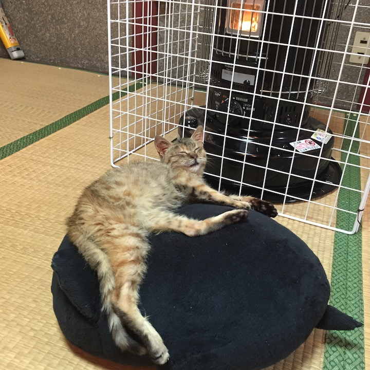

I want you
for cat army
nearest recruiting station
子猫の里親募集しています！
- 仮の名前
- こもも
- 日齢
- 1ヶ月くらい？
- 性別
- メス
- 体重
- 950g
- 健康状態
- いい感じの方向
痩せていますがとても人懐っこいです！ご飯もたくさん食べます。排便はしつけ済み。排尿は現在しつけ中です!
このサイトは随時更新していきます。今後の経過と写真などを追加する予定です。
お問い合わせ: Twitter
子猫の魅力をもっと高めるためのプルリクエストも歓迎です！: GitHub
履歴
- 11/21 こもも保護。目が腫れていて鼻水ズルズル
- 11/22 点眼薬を投与しています
- 11/22 排便のしつけに成功
- 11/23 里親募集サイトを公開しました